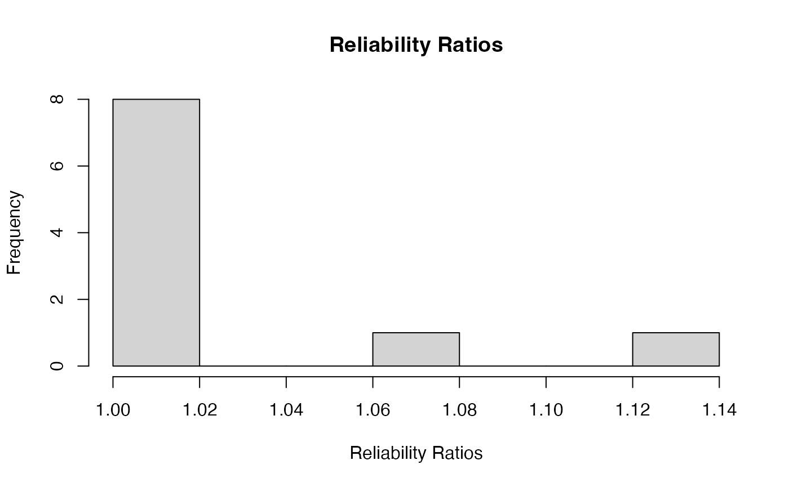

Abstract
We demonstrate our new moment-based linkage disequilibrium (LD)
estimators, as implemented in the ldfast() function. These
methods are described in detail in Gerard (2021). The following code
chunks are only evaluated if updog is installed with a
version of at least 2.0.2.
Analysis
We will load the packages and data that we will need
library(updog)
library(ldsep)
library(corrplot)
#> corrplot 0.95 loaded
data("uit", package = "ldsep")
class(uit)
#> [1] "multidog"We need the posterior probabilities for each genotype for each
individual at each SNP. In updog, this corresponds to the
Pr_n variables in its output, where n varies
from 0 to the ploidy. We can use updog::format_multidog()
to extract these values into an array with the proper dimensions.
ploidy <- 4
gp <- format_multidog(x = uit, varname = paste0("Pr_", 0:ploidy))
class(gp)
#> [1] "array"
dim(gp)
#> [1] 10 84 5The first dimension indexes the SNPs, the second dimension indexes
the individuals, and the third dimension indexes the possible dosages.
So gp[i, j, k] contains the posterior probability that
individual j has dosage k-1 at SNP
i.
You can use other genotyping programs to obtain these posterior probabilities, but they have to be formatted as an array with the dimensions in the correct order (SNPs by individuals by dosages).
However, in order for these estimates to perform
well, you need to use posterior genotype probabilities that have been
calculated using adaptive priors, i.e. empirical/hierarchical Bayes
approaches. There are many approaches that do this, such as {updog},
{polyRAD},
{fitPoly},
or {SuperMASSA}.
Note that GATK uses a uniform prior, so would be inappropriate for use
in ldfast().
Let’s use our genotype posterior probabilities (gp) to
estimate LD.
ldout <- ldfast(gp = gp, type = "r2")ldout contains:
-
ldmat: The estimated squared correlation coefficients, adjusted for genotype uncertainty.corrplot(corr = ldout$ldmat, method = "color", type = "upper", diag = FALSE, tl.pos = "n") -
semat: The estimated standard errors for the squared correlation coefficient estimates.corrplot(corr = ldout$semat, method = "color", type = "upper", diag = FALSE, tl.pos = "n", is.corr = FALSE)
-
rr: The estimated “reliability ratios”, the multiplicative effects applied to the naive LD estimates using just the posterior mean genotypes.graphics::hist(x = ldout$rr, main = "Reliability Ratios", xlab = "Reliability Ratios")
The slowest part of ldfast() is using hierarchical
shrinkage on the log of the reliability ratios
(shrinkrr = TRUE), but I wouldn’t disable this as some
reliability ratios have high variance and are greatly improved through
shrinkage.
Other LD estimators are available: D,
Dprime, r, and z. See the help
file of ldfast() for details.
References
- Gerard, David (2021). “Scalable Bias-corrected Linkage Disequilibrium Estimation Under Genotype Uncertainty.” Heredity, 127(4), 357–362. doi:10.1038/s41437-021-00462-5.